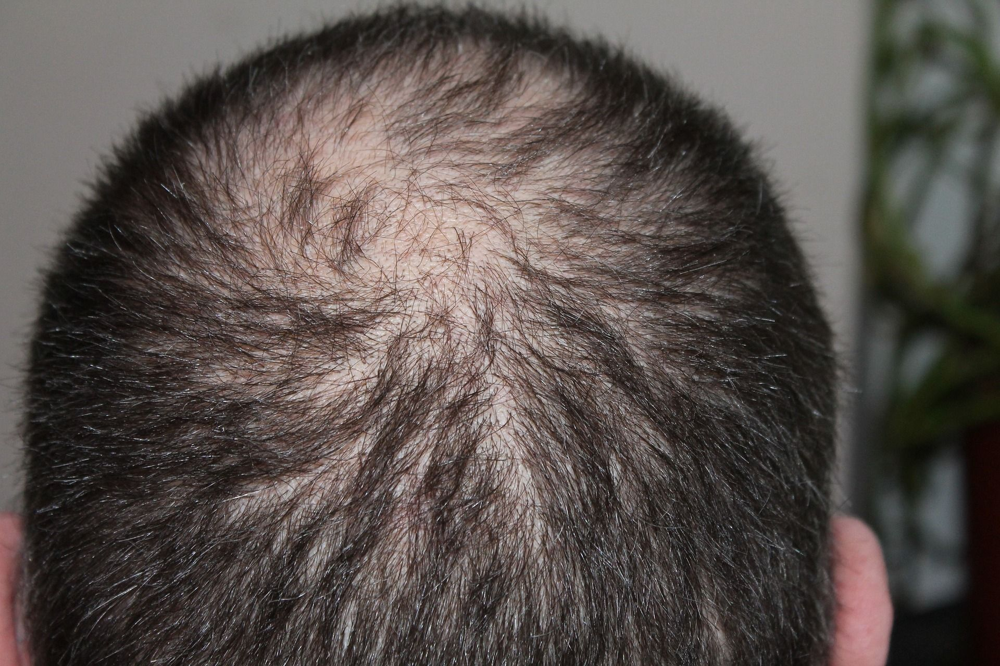
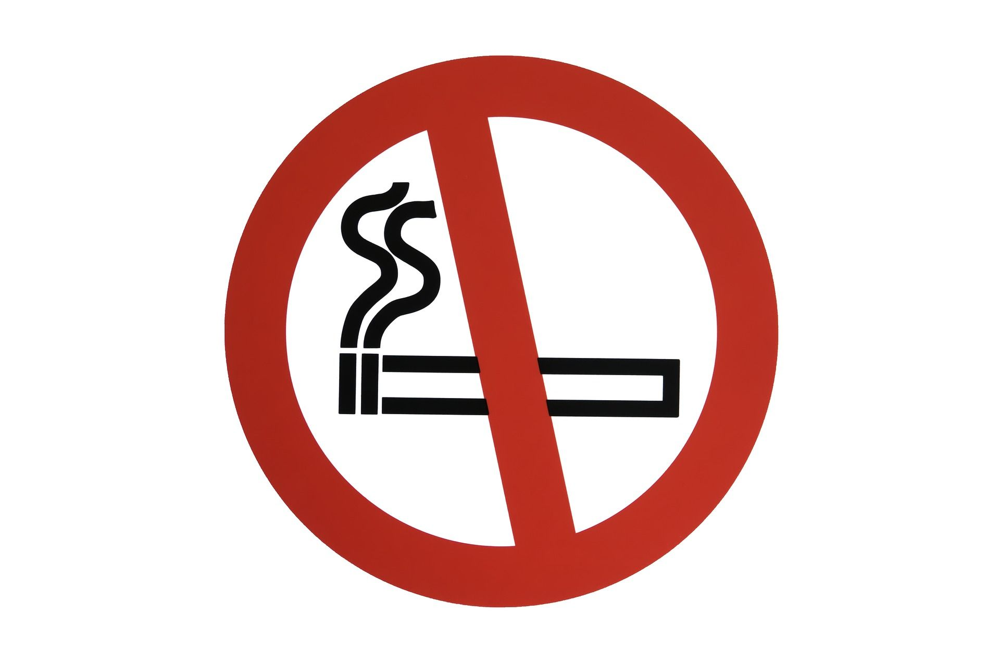

Kosten: Es kostet gerade einmal 10Euro.
Anwendung: Zweimal taeglich auftragen. Schon nach ein paar Tagen waechst das Haar nach.

Alternative
:

Nicht Rauchen! (Rauchen kann eine Ursache für
Haarausfall sein!)